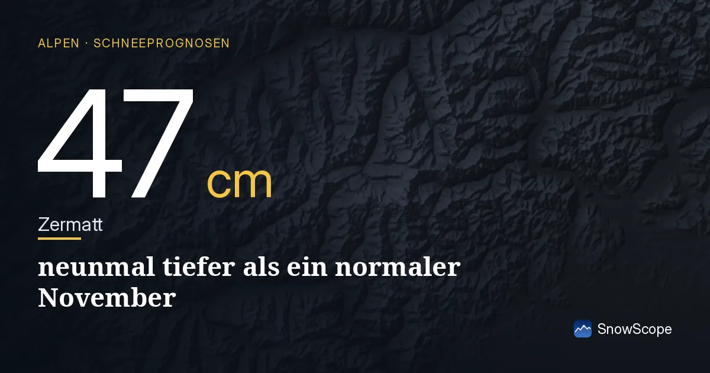

Zermatt 47 cm: neunmal tiefer als ein normaler November
Zermatt läuft dem letzten Jahrzehnt weit voraus. Die oberen Hänge haben heute 47 cm, fast siebenmal so viel wie wir Mitte November in dieser Höhe normalerweise sehen.
Die Live-Schneeprognose für Zermatt in der SnowScope-AppSchneehöhen, Pulverschnee-Alarme und 3D-Karte, gratis.
Wie selten ist diese Schneemenge?
Wenn ich die oberen Hänge von Zermatt auf 2.716 m anschaue, liegt die Schneemenge heute bei 47 cm. Das sind 690% von dem, was wir für dieses Datum erwarten. Anders ausgedrückt: in neun von zehn Wintern hätte Zermatt weniger Schnee als heute. Die normale Tiefe Mitte November liegt bei etwa 31 cm; in strengen Wintern erreichen wir 56 cm. Wir sind bereits gut in diesem oberen Bereich.
Vor drei Tagen, am 16. November, verlor die Alpenregion als Ganzes an Schneedecke. Wir hatten 63.230 km² schneebedecktes Land. Heute sind wir auf 60.480 km² herunter. Aber die Skigebiete selbst sind gut versorgt. Der Schnee verschwindet nicht schnell; er verlagert sich und setzt sich. Die 0°C-Grenze hat sich bei Zermatt stabil um 2.200 bis 2.460 m gehalten und hält die oberen Hänge kalt.
| Skigebiet | Schneehöhe | Neuschnee, 72 h | Erwartet, nächste Tage | Gipfel |
|---|---|---|---|---|
| Zermatt | 47 cm | 61 cm | 77 cm | 3.872 m |
| La Grave | 105 cm | 77 cm | 104 cm | 3.543 m |
| Alpe d'Huez Grand Domaine | 71 cm | 59 cm | 91 cm | 3.306 m |
| Les Arcs | 64 cm | 81 cm | 96 cm | 3.205 m |
| La Plagne | 38 cm | 68 cm | 90 cm | 3.058 m |

Regen und Schnee: wo die Grenze verläuft
Die Frage vor Ort ist einfach: Wo wird Regen zu Schnee? In den nächsten vier Tagen wird sich die 0°C-Grenze in den Alpen verschieben. Heute liegt sie zwischen 2.060 m (tiefste Werte, früh morgens an nordseitigen Hängen) und 2.760 m (höchste Werte, wärmste Mittagsstunden). Am Freitag fällt sie deutlich ab. Die Frostgrenze am Freitag liegt zwischen 1.510 m und 2.520 m in der Region.
Bei Zermatt liegt die Schneegrenze in den wärmsten Tagesstunden heute und Donnerstag bei etwa 2.200 m. Das bedeutet, Regen fällt auf Gras und Felsen unter 2.200 m, Schnee darüber. Freitag bringt einen Wendepunkt: Die Schneegrenze bei Zermatt fällt Freitagmorgen wieder auf 2.200 m und bleibt dort. Am Samstag stürzt sie auf 1.300 m ab. Das ist ein Geschenk für die mittleren Skigebiete, die darum kämpfen, das Wenige zu halten, das sie haben.
Kein Regen auf der Schneedecke oben
Ein Risiko, das wir in der Frühsaison genau beobachten, ist Regen auf etabliertem Schnee. Bei Zermatt passiert das nicht. Die Schneegrenze bleibt alle vier Tage unter dem Talgrund von 1.559 m. Das obere Gelände bleibt in der Trockenschneezone. Die 0°C-Grenze am Talgrund überschreitet tagsüber nie den Gefrierpunkt.
Tiefer unten, bei Skigebieten wie Alpe d'Huez Grand Domaine und Les Arcs, kreuzt die Schneegrenze die meisten Tage das Skigebiet. Aber die Grundlage ist dünn, und die Luftmasse, die Regen bringt, bringt später auch einen Schwall von kalter Luft. Wir sehen kein echtes Regen-auf-Schnee-Ereignis in der Vorhersage – einen Tag mit starkem Regen UND hoher Schneegrenze UND etabliertem Schnee an den Hängen. Das würde die Schneedecke verkrusten und schwächen. Davon bleiben wir verschont.
Was in den nächsten vier Tagen kommt
Zermatt wird bis Samstagabend etwa 77 cm Neuschnee bekommen, verteilt auf Donnerstag, Freitag und Samstag. Das ist zuverlässiger Schneefall in der Höhe. Der Niederschlag verteilt sich auf vier Tage, kommt also nicht als einziger Schlag. Stattdessen gewinnen die Berge stetig an Bedeckung.
Vergleich mit Skigebieten tiefer und weiter westlich: La Grave auf 3.196 m Talstation hat heute 105 cm Tiefe. Es wird 104 cm in der Vorhersageperiode dazubekommen. Les Arcs auf 1.222 m hält 64 cm und wird 96 cm dazubekommen. Das Muster ist konsistent: hohe Berge bleiben kalt und trocken, tiefe Berge warm und nass. Freitag ist der Übergangstag, wenn die Frostgrenze zusammenbricht und die ganzen Alpen in den Schneemodus übergehen.
Was das an den Hängen bedeutet
Wenn du diese Woche über 2.200 m bei Zermatt skinst oder wanderst, wirst du etablierten Schnee finden, der vor Regen sicher ist. Die Grundschicht wird dicker. Unter 2.200 m erwarte Regen heute und Donnerstag, dann einen Wechsel zu Schnee Freitag und Samstag, wenn kalte Luft einzieht. Plane deine Aufstiege entsprechend.
Die Geschichte hier ist nicht von einem einzelnen Sturm. Es ist von Beständigkeit. Anfang November brachte Schnee, mehr kam Samstag und Montag, und die Vorhersage beendet die Woche mit Pulverschnee in der Höhe. Für Mitte November in den Alpen ist das neunmal besser als normal.
Tipps für Skifahrer
- Fahr über 2.300 m, um in kaltem Schnee zu bleiben. Regen fällt heute und morgen unter 2.200 m. Die Grenze steigt mittags bis 2.300-2.400 m, fällt aber bei Zermatt bis Freitagabend wieder unter 2.200 m.
- Beobachte den Freitagwechsel genau. Wenn die 0°C-Grenze zwischen Donnerstag und Samstag bei Zermatt von 2.000 m auf 1.300 m fällt, wird feuchter Schnee darüber wieder gefrieren. Freitag früh morgens bietet ein kurzes Fenster der Stabilität vor dem Wechsel.
- Tiefe Skigebiete gewinnen Freitag bis Samstag an Boden, wenn die Schneegrenze fällt. Alpe d'Huez Grand Domaine (1.124 m Talstation) wird Schnee Freitag in der mittleren Höhe sehen und 91 cm in der Vorhersagespanne dazubekommen.
- Schau dir vor Skitouren den offiziellen Lawinenbericht für deine Region an. Neuschnee und plötzliches Gefrieren können die Hangstabilität verändern.
Zu diesen Zahlen
Die Schneehöhen der Skigebiete sind der meiste Schnee in den oberen Hängen am angegebenen Tag; es sind Schätzungen für eine Fläche, keine Messung an einem Punkt. Prognosen können sich ändern. Lies vor dem Freeriden immer den offiziellen Lawinenlagebericht.
Offizielle Lawinenlageberichte: EAWS (Alps)
Diesen Bericht zitieren
Für Forschung, Lehre oder Presse: Zahlen und Grafiken sind unter CC BY 4.0 mit dieser Quellenangabe frei nutzbar.
SnowScope (2026), Zermatt 47 cm: neunmal tiefer als ein normaler November, https://snowscope.app/blog/de/2026/11/alps-freezing-level-snow-line-18-november-2026.html, abgerufen am 2026-11-18
SnowScope (Atlas Labs). (2026, November 18). Zermatt 47 cm: neunmal tiefer als ein normaler November. SnowScope snow reports. https://snowscope.app/blog/de/2026/11/alps-freezing-level-snow-line-18-november-2026.html
BibTeX
@misc{snowscope2026alpsfreezinglevelsnowlin,
author = {{SnowScope (Atlas Labs)}},
title = {Zermatt 47 cm: neunmal tiefer als ein normaler November},
year = {2026},
month = nov,
howpublished = {\url{https://snowscope.app/blog/de/2026/11/alps-freezing-level-snow-line-18-november-2026.html}},
note = {Published 2026-11-18 12:57 UTC; accessed 2026-11-18}
}· CC BY 4.0 · Methoden, Daten und Werkzeuge →
Zermatt: Schnee und Temperatur nach Höhe, dieser Winter vs letzter (Werkzeuge) →
Zermatt folgen
Gratis: eine Nachricht, wenn Neuschnee kommt, und jeden Morgen die Vorhersage.